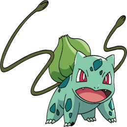
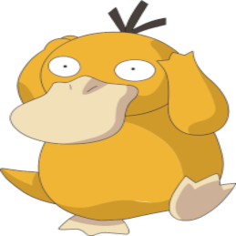

-
Pikachu
HP 300

Descrição
Os Pikachus são pequenos roedores de quarenta centímetros e de seis quilogramas, com um corpo redondo, pernas curtas e uma longa cauda, quando macho, a cauda tem um formato de um raio, mas se o Pikachu for fêmea sua cauda ganha um coração na ponta.
-
Charizazrd
HP 800

Descrição
Geralmente, um Charizard é competitivo. Ele adora a batalha e seu espírito competitivo também é notável, uma vez que nunca vai cuspir fogo em um inimigo mais fraco a menos que provocado ou ordenado. Quando fica muito irritado, as chamas em sua cauda se tornam branco-azuladas.
-
Mertwo
HP 1200

Descrição
Mewtwo foi criado geneticamente em um laboratório, sendo um clone do misterioso antigo Pokémon Mew. É uma criatura com uma postura humanóide, mas tem algumas características felinas.
-
Bulbasaur
HP 320
Descrição
Bulbasaur é uma criatura quadrúpede réptil que lembra um dinossauro jovem, com um azul-verde manchado. Ele tem três dedos brancos ou garras crescendo fora de suas quatro pernas, e seus olhos são de um vermelho brilhante. A característica mais notável deste Pokémon é o bulbo de cebola na sua parte traseira, que cresce de uma semente em suas costas plantada por sua mãe ao nascer.
-
Psyduck
HP 300
Descrição
Psyduck tem um poder misterioso. Quando ele usa, este Pokémon gera ondas cerebrais que supostamente só seriam vista em quem dorme. A descoberta gerou controvérsias entre estudiosos.